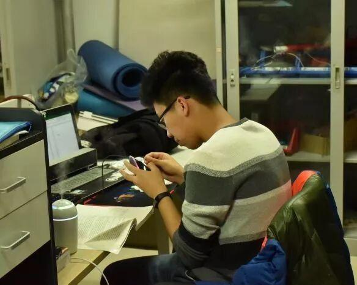
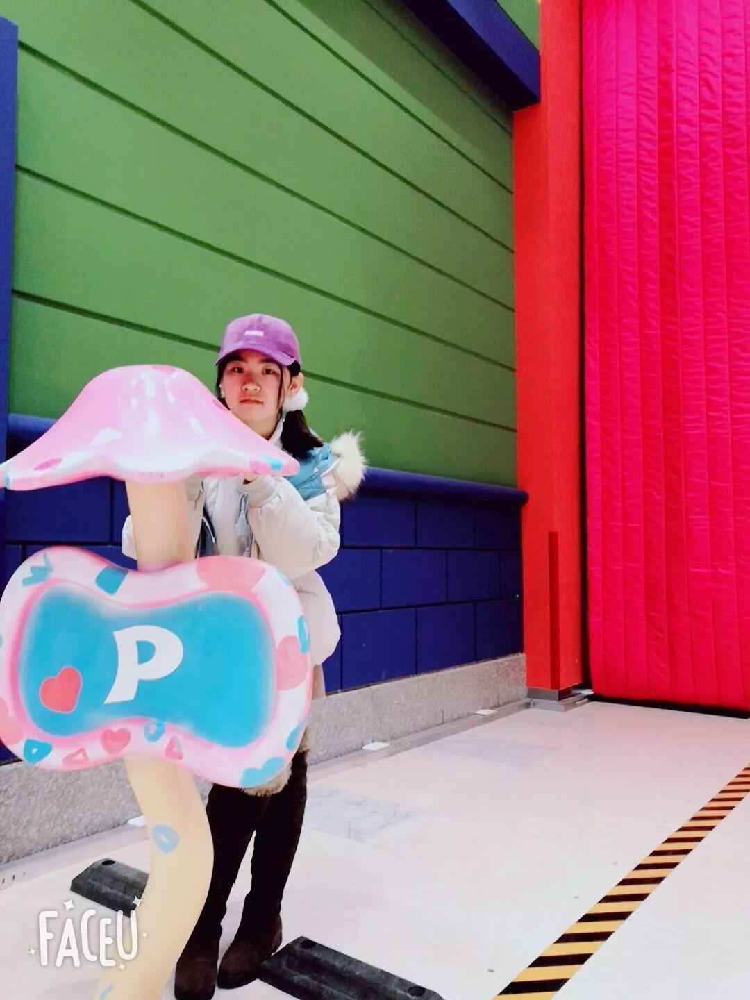
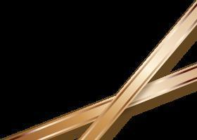
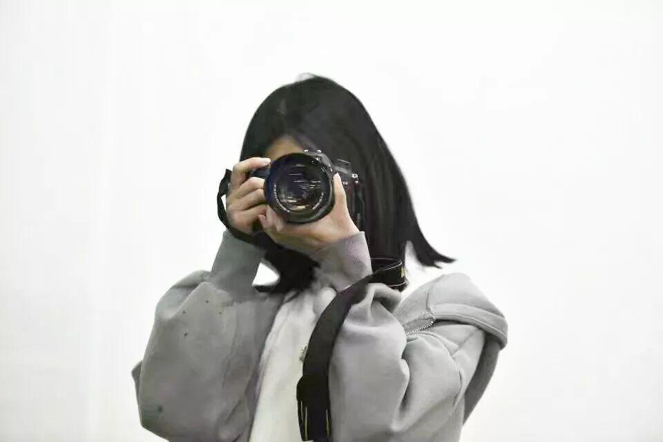
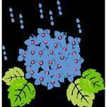
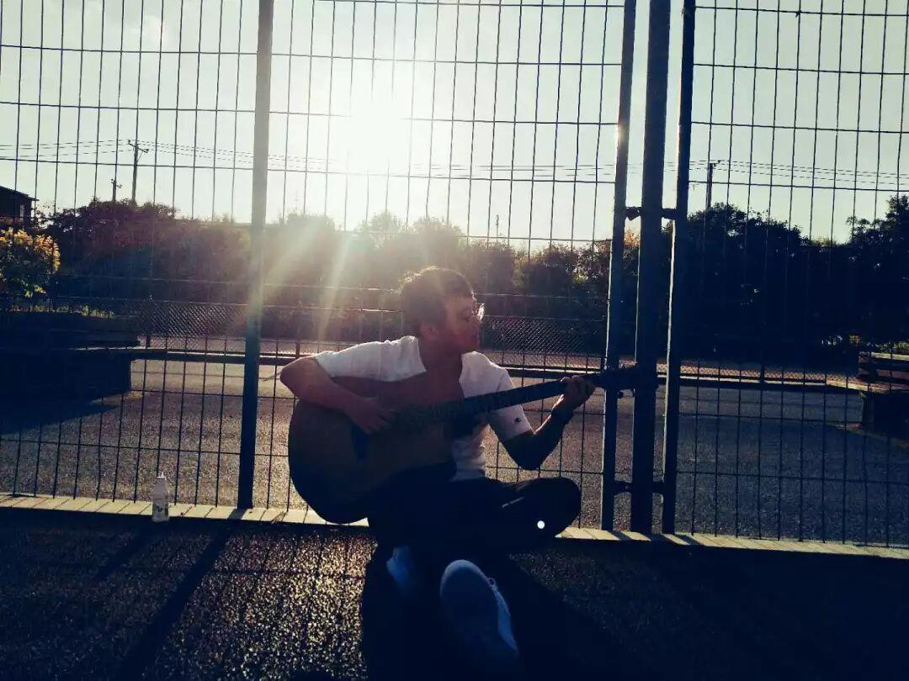
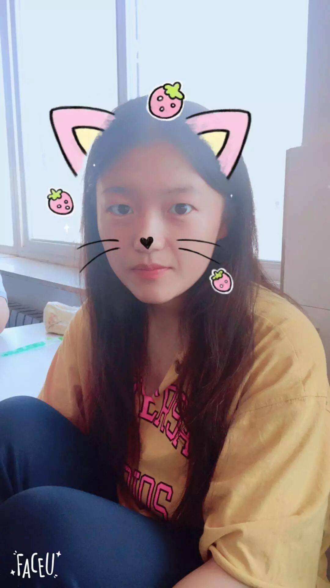
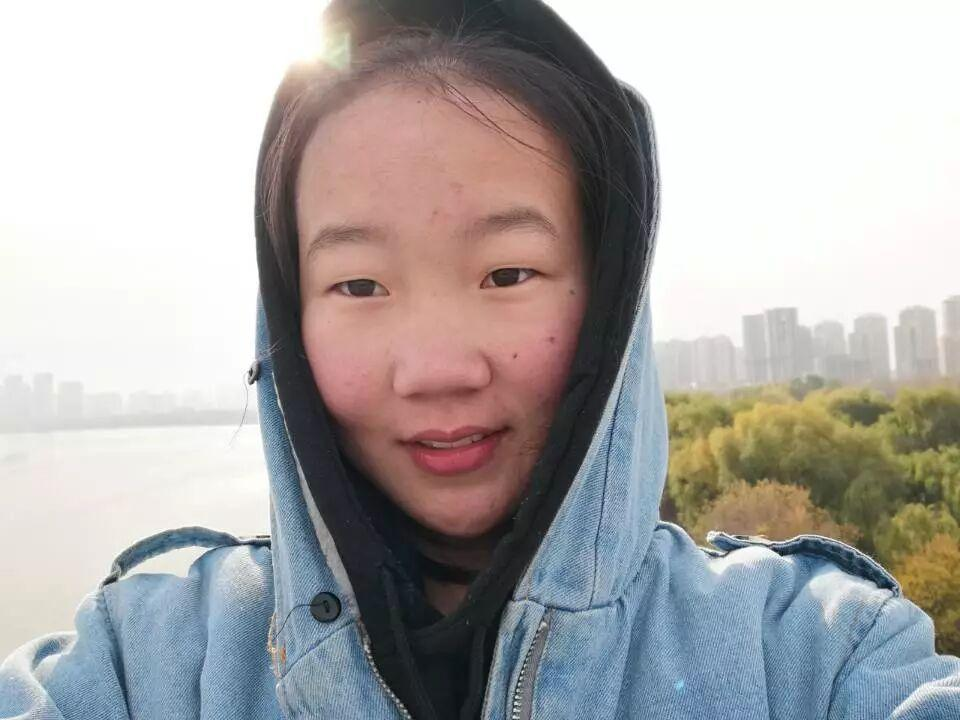
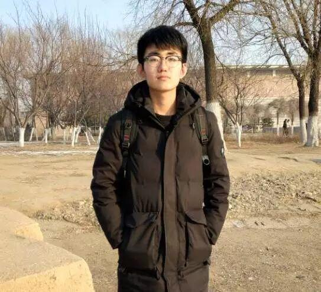

信息部--默默无闻的贡献者
信息部
电协


王喆学长，电协的一名骨干成员。平时做事认真，乐于助人，用自己的努力帮助大一新生的成长，蜕变。学长虽平日公事繁忙，但自己也是能合理的安排自己的时间。如果有谁在生活和学习上有困惑时，都可以来找我们这位学长。
扈竞 |  |
hello，我是扈竞学姐，喜欢萌萌哒的东西，比如说张诗梦（见下），她的本体我家仓鼠豆子；也喜欢机械，喜欢它的炫酷，如果你也像我一样喜欢社宠豆子和机械的炫酷，那么不要错过电协。


张诗梦
个人喜好：(好看的都是我喜欢的，积极的都是我向往的)
座右铭:生活就是一个不断学习的过程
王明铭

各位小可爱们好～我是17级"老"学姐王明铭～希望各位电协的萌新们不管在技术部还是行政能学到想学的，得到想得到的～～
我是白皓天，一个热爱摄影的90后，藏匿于文体210的安全工程专业大二干事，喜欢打打游戏看看视频研究一些花里胡哨的新鲜事物，我上单贼溜，欢迎来找我掉分。

我是黄思铭，来自信息科学与工程学院，电子信息工程专业，一个热心的沈阳人。我爱唱歌，爱运动，喜欢交朋友，很高兴在电协遇见大家。
我是符阳懿，电协信息部成员。平时喜欢运动，尤其喜欢打乒乓球，欢迎约球。

杜遇涵，来自材料院材控专业，平时喜欢打游戏，追剧。性格开朗。希望大家在电协的每一天都是开开心心的就好了。
我是李亭熹，来自电子信息科学与工程学院，目前正在ps的汪洋大海中挣扎

我是来自机械工程学院的秦艳霞，来自电协信息部 ，喜欢音乐和绘画希望能在电协一起不断学习不断进步 。
大家好，我是黄信涵，来自机械工程学院的2018级新生。我既喜欢一个人安静的读书，同时又喜欢玩，但并不是玩游戏，只是喜欢和朋友在一起快乐的感觉。当然，我会尊重我的每一个朋友，我不喜欢以批评的方式来纠正错误的人，因为这样只会使矛盾加剧，而达不到解决问题的目的 。
大家好，我是王颢然，来自辽宁省大连市，电子信息科学与技术专业。我的爱好是彩虹六号、听音乐、打篮球，偶尔还拨弄我室友养的“老鼠”。（本人照片经由美颜相机合成，与本人无关）


大家好，我是18级装备工程学院探测专业的苏闯，来自信息部。平时喜欢音乐，运动。性格比较温和，很高兴能在电协遇见大家，希望能和大家一起进步。
编辑：苏闯
识别二维码，关注我们